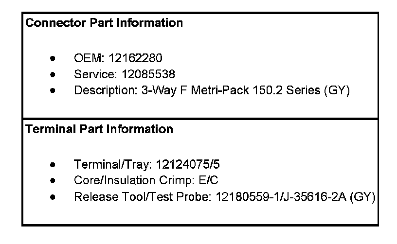
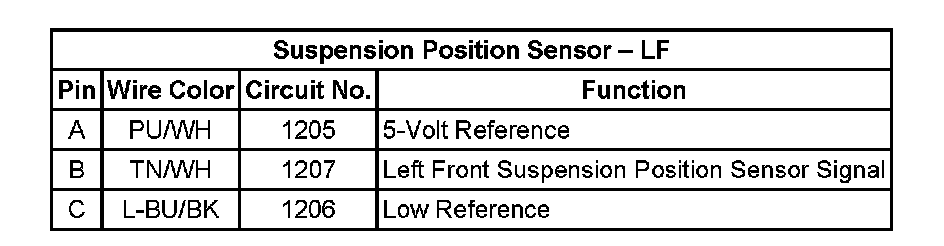
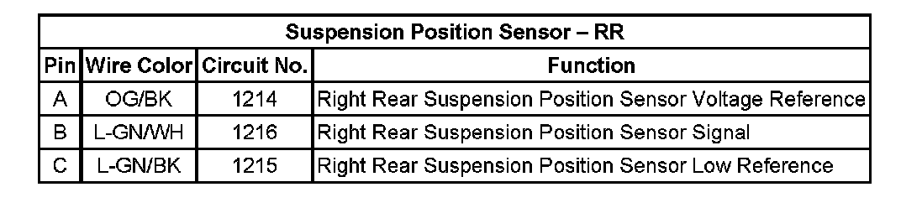

Ride Height Sensor: Diagrams
Electronic Suspension Control Connector End Views
Suspension Position Sensor - LF
Suspension Position Sensor:


Suspension Position Sensor - LF:

Suspension Position Sensor - LR
Suspension Position Sensor:

Suspension Position Sensor - LR:

Suspension Position Sensor - RF
Suspension Position Sensor:

Suspension Position Sensor - RF:

Suspension Position Sensor - RR
Suspension Position Sensor:

Suspension Position Sensor - RR:
